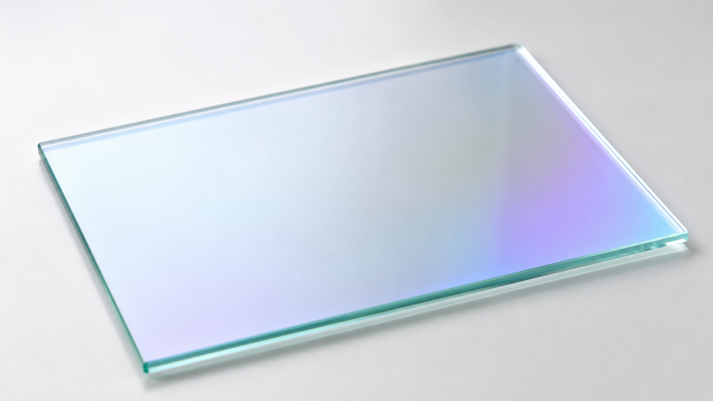
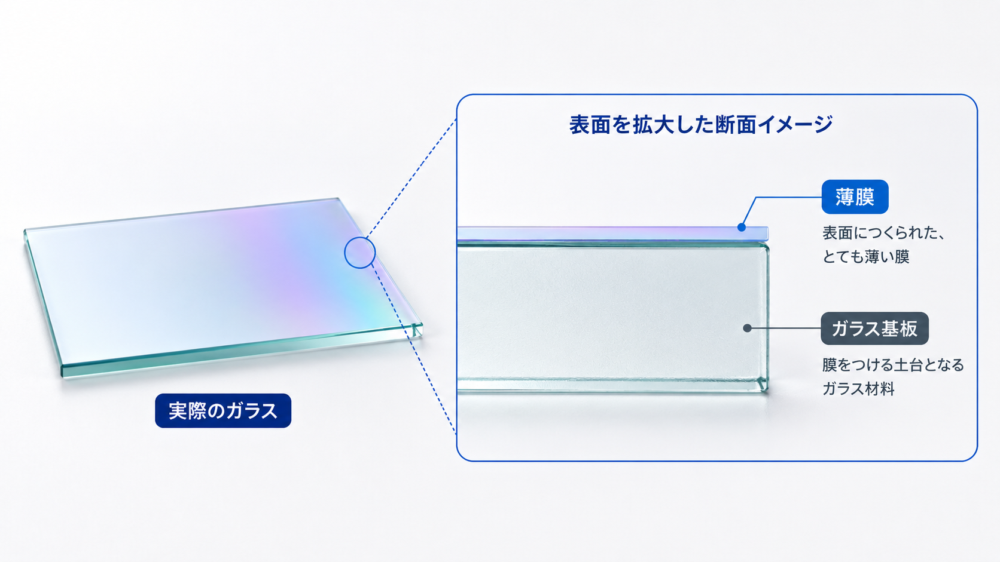

THIN FILM TECHNOLOGY / 01
薄膜って何？
薄膜とは、ガラスや金属などの表面につくられる、とても薄い膜です。
まず、実際のイメージを見てみましょう
見た目では分かりにくくても、ものの表面には薄い膜がつくられていることがあります。

表面を拡大すると
薄膜は、膜をつける土台となる「基板」の表面につくられます。

※ 薄膜の厚さは、分かりやすく大きく表現しています。
薄膜は、ものの表面につくられる、とても薄い層です。
薄膜の下にある土台を「基板（基材）」と呼びます。
薄膜の下にある土台を「基板（基材）」と呼びます。